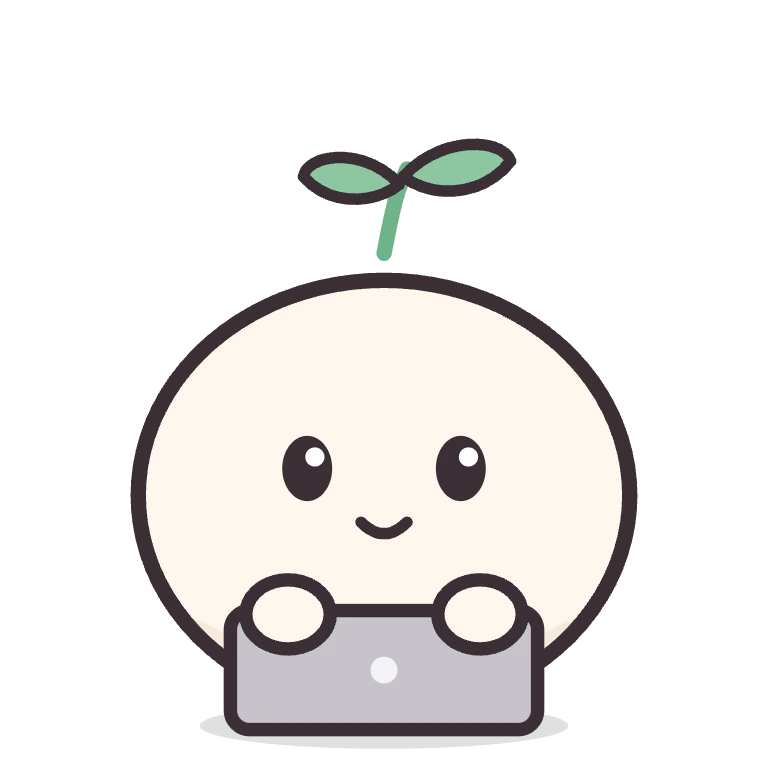

Heb
ı
u
Heb
ı
u
它听到什么
钩子 · 你说的话 · 数据来源
Claude Code
开始、干活、等批准、完成、出错
Codex
开始、干活、等批准、完成
你说的话
⌃⌥H 浮窗、聊天页、语音
日历 · 提醒事项
默认关闭，只读本机
自己写的脚本
输出 JSON 就能变成待办
事件
Hebiu
住在桌面上的个人 Agent
Biu
默认形象，可以换成你自己的
形象包
样子、动作、台词、人设，一个文件夹
待办与提醒
一句话加待办，习惯、重要日子、番茄钟
AI 大脑（可选）
用自己的 DeepSeek key 聊天、改待办
每晚写日记，慢慢记住你
动作和提醒
它怎么告诉你
动作 · 气泡 · 通知

做动作
敲键盘、喊你、庆祝、晕一下
头顶气泡
台词、到点提醒、AI 的回答
系统通知
待办到点，勿扰时也会提醒
主窗口 · 菜单栏
待办、习惯、回顾、番茄钟
都在本机
数据是 ~/.hebiu 里的纯文本
What it hears
Hooks · your words · data sources
Claude Code
start, work, approval, done, error
Codex
start, work, approval, done
Your words
⌃⌥H popup, chat page, voice
Calendar · Reminders
off by default, read locally
Your own scripts
print JSON, get to-dos
events
Hebiu
a personal agent on your desktop
Biu
the default — make your own
Character pack
looks, actions, lines and persona
To-dos & reminders
one-line to-dos, habits, dates, Pomodoro
AI brain (optional)
chat and edit to-dos via DeepSeek
a nightly diary helps it remember you
reactions
How it tells you
Animations · bubbles · notifications
Animations
typing, calling you, cheering, dizzy
Speech bubble
lines, due reminders, AI replies
Notifications
to-dos due, even in Focus mode
Main window · menu bar
to-dos, habits, review, Pomodoro
All local
plain text in ~/.hebiu